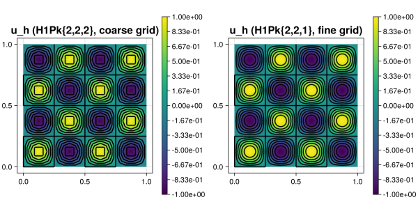

290 : Interpolation Between Meshes
This example demonstrates the interpolation between meshes feature. Here, we interpolate a function with the P2 element of a coarse triangulation and then interpolate this P2 function on two uniform refinements into some P1 function. Then, both finite element functions are plotted.
The computed solution for the default parameters looks like this:

module Example290_InterpolationBetweenMeshes
using ExtendableFEMBase
using ExtendableGrids
using GridVisualize
# function to interpolate
function u!(result, qpinfo)
x = qpinfo.x
result[1] = sin(4 * pi * x[1]) * sin(4 * pi * x[2])
result[2] = cos(4 * pi * x[1]) * cos(4 * pi * x[2])
end
# everything is wrapped in a main function
function main(; ν = 1e-3, nrefs = 4, Plotter = nothing)
# generate two grids
xgrid1 = uniform_refine(grid_unitsquare(Triangle2D), nrefs)
xgrid2 = uniform_refine(xgrid1, 3; store_parents = true)
@show xgrid1 xgrid2
# set finite element types for the two grids
FEType1 = H1Pk{2, 2, 2}
FEType2 = H1Pk{2, 2, 1}
# generate coressponding finite element spaces and FEVectors
FES1 = FESpace{FEType1}(xgrid1)
FES2 = FESpace{FEType2}(xgrid2)
FEFunction1 = FEVector(FES1)
FEFunction2 = FEVector(FES2)
# interpolate function onto first grid
@time interpolate!(FEFunction1[1], u!)
@time interpolate!(FEFunction2[1], u!)
# interpolate onto other grid
@time lazy_interpolate!(FEFunction2[1], FEFunction1)
@time lazy_interpolate!(FEFunction2[1], FEFunction1; use_cellparents = true)
# plot
p = GridVisualizer(; Plotter = Plotter, layout = (1, 2), clear = true, resolution = (800, 400))
scalarplot!(p[1, 1], xgrid1, view(nodevalues(FEFunction1[1]), 1, :), levels = 11, title = "u_h ($FEType1, coarse grid)")
scalarplot!(p[1, 2], xgrid2, view(nodevalues(FEFunction2[1]), 1, :), levels = 11, title = "u_h ($FEType2, fine grid)")
return p
end
function generateplots(dir = pwd(); Plotter = nothing, kwargs...)
plt = main(; Plotter = Plotter, kwargs...)
scene = GridVisualize.reveal(plt)
GridVisualize.save(joinpath(dir, "example290.svg"), scene; Plotter = Plotter)
end
endThis page was generated using Literate.jl.